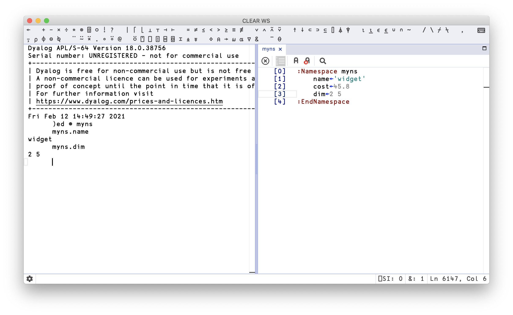

Namespaces ⎕NS
Contents
Namespaces ⎕NS#
The utility of a language as a tool of thought increases with the range of topics it can treat, but decreases with the amount of vocabulary and the complexity of grammatical rules which the user must keep in mind. Economy of notation is therefore important. –Kenneth E. Iverson
A namespace is a way to group data and code into a hierarchy. Dyalog describes namespaces like so:
Namespace is a (class 9) object in Dyalog APL. Namespaces are analogous to nested workspaces.
No, that doesn’t mean anything to me either. In fact, APL namespaces are similar in spirit to those found in C++:
Namespaces provide a method for preventing name conflicts in large projects. Symbols declared inside a namespace block are placed in a named scope that prevents them from being mistaken for identically-named symbols in other scopes.
Here’s an anonymous namespace:
obj ← ⎕NS⍬
We can assign values to variables inside this namespace:
obj.(name cost id) ← 'widget' 55.0 'widg443'
obj.(name cost id)
Names inside a namespace can hold any value that names can hold outside a namespace, including functions:
obj.sum←+/
obj.sum 1 2 3 4 5
There is a handy user command, ]map that gives a tree outline of a namespace that’s worth adding to your repertoire:
]map obj
Scripted namespaces#
A nifty feature is that we can compose a namespace as a script. In RIDE, you need to say )ed ⍟ mynamespace in order to work with a scripted namespace. Yes, of course that’s a good use for the Logarithm glyph. It looks like so:

In this way, the namespace can be a convenient way to organise your code. And in case it wasn’t obvious, it’s actually a way in which you can have many multi-line dfns in the same editing window – or even text file. It even works as intended in the Jupyter notebook:
]dinput
:Namespace myns
f ← {
⍺+⍵
}
g ← {
⍝ g fun
⍺⍵
}
h ← {
s ← '\d+'⎕R'D'⊢⍵
⍺ g s
}
:EndNamespace
'nodigits' myns.h 'abd556jashgd8879'
Wait, this is starting to look like a dict!#
We can get tantalisingly close to having a namespace function as a dict. In order to list the names of variables contained in a namespace, we have the namelist, ⎕NL, system function.
⎕ ← names ← obj.⎕NL 2
The 2 there lets ⎕NL know that we want an array back.
⍴names
If we feed it ¯2 instead we get a nested vector instead:
obj.⎕NL ¯2
The right argument to ⎕NL is a name class, allowing us to select based on what kind something contained in the namespace is. Many of the name classes are concerned with bits of Dyalog that are out of scope for this book.
We can get the values of variables by evaluating their names:
obj⍎'cost'
obj.(⍎¨⎕NL ¯2)
Almost, but not quite, a dict:
_set←{⍎'⍺⍺.',⍺,'←⍵'⊣⍺⍺}
keys←{⍵.⎕NL ¯2}
vals←{⍵.(⍎¨⎕NL ¯2)}
'hello' (obj _set) 'world'
obj⍎'hello'
keys obj
vals obj
but this approach won’t let you use anything but character vectors as keys, and the keys must also be valid APL names. There are also some performance constraints if the number of items in a namespace grow large.
A note on mutability#
Namespaces in Dyalog are reference types, and mutable. This allows you to bypass some scope-related barriers that may have been erected for very good reasons, so caveat emptor. For example, we can mutate a namespace even if it’s passed as the left argument, which is an error for normal arrays:
ns ← ⎕NS⍬
ns.key ← 45
ns {⍺.key ← 99 ⋄ ⍵} 'hello' ⍝ Mutation through ⍺...
ns.key
It also means that there is no need for modified assignment through a tack, ⊢← if we want to set a value in a namespace not in our immediate scope. All of this is either very useful, or very dangerous, depending on your particular view point. The reality is that it’s both useful, but also increases the risk of foot-gun incidents.
Arrays of namespaces#
Certain namespace operations extend into arrays of namespaces, almost like scalar extension, which might not be obvious at all, but supremely useful. For example, we can assign to a specific field across the whole array:
⎕IO←0
nsarray←⎕NS¨6⍴⊂⍬
nsarray.name←'adam' 'bob' 'charlotte' 'dave' 'erica' 'fred'
nsarray.pid←3 7 87 32 32 9
nsarray.items←(1 2 3)(2 3)(9 32 23)(9 8 7 6 5 4)(8 7)(,1)
nsarray[2].name
and, as a consequence, pick a field from all array elements:
nsarray.name
We can also execute functions on fields if we enclose in parentheses:
nsarray.(≢items)
or pick multiple fields, too:
nsarray.(name pid)
If you were jealous of KDB+’s neat SQL integration, we can even knock up a simple query DSL for accessing data represented as arrays of namespaces, as Adám showed in a post in APL Orchard:
From←{⍵⍎¨⊂⍺}
Has←{×⍺.⎕NC⊂⊂⍵}
In←{⍺∘(∨/⍷)¨⍵}
Where←/⍨
'pid' From nsarray Where 'dave' In nsarray.name
Who needs SQL now? We can select on the existence of a particular field using the Has helper:
nsarray[2 5].title←'manager' 'pointy-haired boss'
'name' From nsarray Where nsarray Has 'title'
Left argument#
We can also pass a left argument to ⎕NS, which names the namespace, including nested names:
'a'⎕NS⍬
a
'top.middle.bottom'⎕NS⍬
]map top